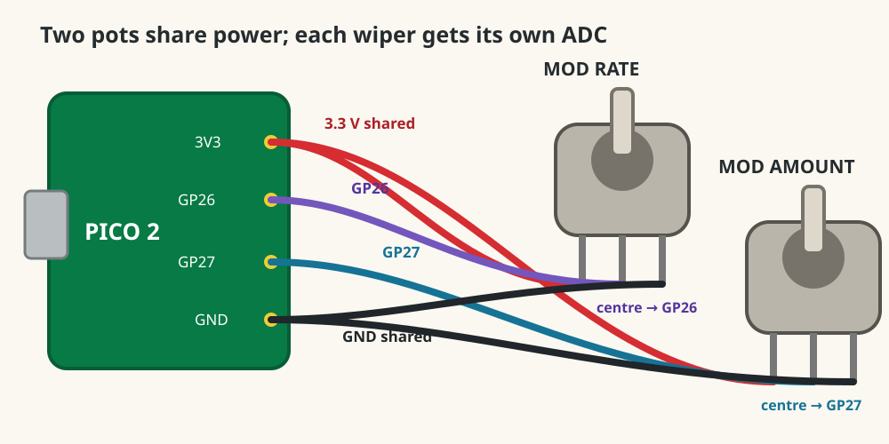

Dub Siren V3 · lesson 0007
Give the LFO two dimensions
Keep Mod Rate on GP26. Add a second B10K potentiometer on GP27 to control how bright each flash becomes.
1. Name the existing knob
Your GP26 potentiometer is now Mod Rate. Keep its three wires unchanged. The new potentiometer is Mod Amount.
2. Add Mod Amount with USB unplugged
- Connect one outside pin of the new B10K pot to the same
3V3(OUT)supply. - Connect its centre wiper to
GP27 / ADC1. - Connect its other outside pin to the same
GND. - Leave GP26, GP14, GP15, and the LED resistor unchanged.

3. Name both analogue inputs
Run this main.py:
from picozero import Button, LED, Pot
from time import sleep, ticks_diff, ticks_ms
led = LED(15)
button = Button(14)
rate = Pot(26)
amount = Pot(27)
last_change = ticks_ms()
light_on = False
while True:
interval = int(500 - rate.value * 450)
if button.is_pressed:
now = ticks_ms()
if ticks_diff(now, last_change) >= interval:
light_on = not light_on
last_change = now
led.value = amount.value if light_on else 0
else:
led.off()
light_on = False
last_change = ticks_ms()
sleep(0.01)light_on remembers which half of the flash cycle is active. During the active half, amount.value sets brightness. Rate and Amount stay independent.
4. Prove each knob has one job
- Hold Trigger. Set Amount halfway.
- Turn Rate only: speed changes; peak brightness should not.
- Set Rate near the middle.
- Turn Amount only: brightness changes; speed should not.
- Release Trigger: LED stops immediately.
Without moving wires, predict the symptom if the two centre-wiper connections were exchanged.
One knob works backwards
Unplug USB and exchange only that pot’s two outside wires. Do not move its centre wiper.
Amount at zero makes the flashing disappear
Correct: zero amount produces zero brightness. Raise Amount before diagnosing Rate.
Done means
- Rate changes speed without changing peak brightness.
- Amount changes brightness without changing speed.
- Trigger still stops immediately.
- You can identify GP26/ADC0 and GP27/ADC1.
Tell your teaching agent: whether each knob changes only its assigned property, and which direction each knob turns.